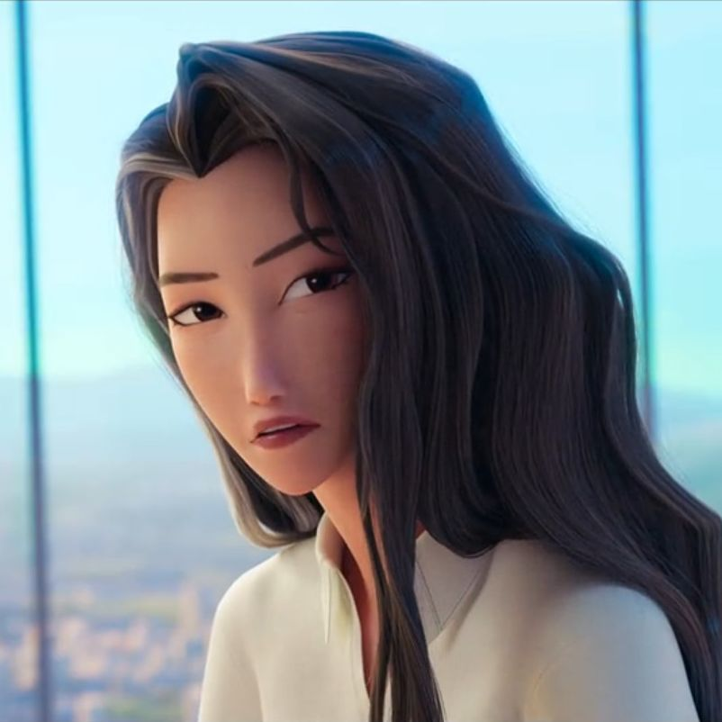

Back to Characters

Celine
席琳
Xílín
Hunter
Character Information
- Gender: Female
- Species: Human
- Occupation: Singer (retired)
- Group: Sunlight Sisters
Relationships
- Rumi: adoptive daughter and student;
- Mira: student;
- Zoey: student;
- Gwi-Ma: longtime enemy.
Description
Chinese Vocabulary